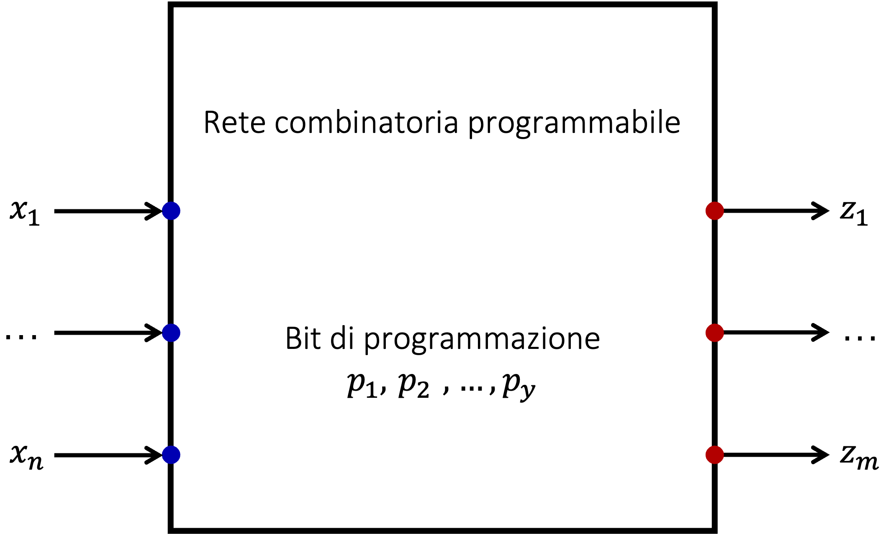

Definizione - Perchè nascono le reti programmabili?
Con l'avvento della VLSI ("
Very Large Scale Integration
") (che comprende milioni di gate all'interno dello stesso chip e quindi costi alti per la progettazione), si rende necessaria la possibilità di programmazione per permettere di ammortizzare i costi.
Definizione - Memoria
Una memoria non è altro che la realizzazione circuitale di un array: è, infatti, una lista di dati indicizzabile con un intero (l'indirizzo).
Anche una tabella della verità può essere vista (logicamente) come una memoria immutabile: in base al valore degli \( n\) bit d'ingresso, essa restituisce una delle \( 2^{n}\) possibili uscite.
Anche una tabella della verità può essere vista (logicamente) come una memoria immutabile: in base al valore degli \( n\) bit d'ingresso, essa restituisce una delle \( 2^{n}\) possibili uscite.
Definizione - Rete combinatoria programmabile
Una rete combinatoria programmabile è una rete in grado di presentare diverse relazioni ingresso/uscita selezionabili tramite la configurazione di segnali interni detti bit di programmazione (una memoria immutabile).
Si ha quindi che
\[ z_{i} = F(p_{1}, \ldots, p_{y}, x_{1}, \ldots, x_{n}) \]
o, più sinteticamente
\[ z_{i} = F_{p}(x_{1}, \ldots, x_{n}) \]

Osservazioni personali - E il multiplexer?
Il principio di funzionamento è analogo a quello del multiplexer: in esso, tuttavia, i bit di programmazione provengono da segnali
esterni
.
Definizione - Memorie ROM
Le memorie ROM ("Read Only Memory") sono memorie non modificabili, ovvero circuiti in cui ad ogni indirizzo corrisponde un dato fissato.
Consideriamo ad esempio la seguente memoria
in cui sono memorizzati
\( 4\)
Byte, indirizzati da
\( 2\)
bit di indirizzi.
La stessa tabella può però essere vista anche nel seguente modo
 ovvero un generatore di funzioni combinatorie.
ovvero un generatore di funzioni combinatorie.
Consideriamo ad esempio la seguente memoria
La stessa tabella può però essere vista anche nel seguente modo
Definizione - Realizzazione di memorie ROM
Per realizzare una ROM si considera ogni uscita come una funzione diversa: ognuna sarà quindi idealmente realizzata nel seguente modo:
La programmazione è quindi realizzata internamente (segnali interni) e non tramite degli ingressi (si evita quindi di avere un numero sempre maggiore di ingressi).
Proprio per questo motivo si ha che lo stato di tali contatti sono "decisi" dal costruttore su ordine dell'acquirente. Proprio per questa caratteristica (essere OTP (" One Time Programmable ")) sono utili per la memorizzazione di informazioni che non cambiano durante il funzionamento (come il BIOS del PC)
- si utilizza un decoder per avere a disposizione ogni possibile mintermine;
- si utilizza un gate OR che può essere collegato ad ognuno di questi mintermini;
- in base alla funzione che si vuole realizzare, si collegherà o meno ogni mintermine (fisicamente equivale a chiudere o lasciare aperto un contatto).
La programmazione è quindi realizzata internamente (segnali interni) e non tramite degli ingressi (si evita quindi di avere un numero sempre maggiore di ingressi).
Proprio per questo motivo si ha che lo stato di tali contatti sono "decisi" dal costruttore su ordine dell'acquirente. Proprio per questa caratteristica (essere OTP (" One Time Programmable ")) sono utili per la memorizzazione di informazioni che non cambiano durante il funzionamento (come il BIOS del PC)
Definizione - Descrizione di una ROM
Si dice quindi che una ROM
\( 2^{n} \times k\)
è una ROM che:
- che può memorizzare \( 2^{n}\) dati;
- ogni dato è grande \( k\) bit;
- è indirizzata tramite \( n\) bit (ovvero l'indirizzo è fatto di \( n\) bit).
Esempio - Esercizio ROM - Autovelox
Si vuole progettare una rete combinatoria che realizza una parte del comportamento di un autovelox a due fotocellule. Tale rete è così caratterizzata:
Per trovare tale valore, consideriamo la dimensione della ROM, ovvero \( 4 \ KB\) . È quindi una ROM \( 4k \times 8\) in quanto ogni byte è uguale ad \( 8\) bit.
Ora è necessario trovare i bit di indirizzo della memoria e, dato che:
- un bus in ingresso che riceve il tempo (in millisecondi) trascorso tra l'attivazione della prima e della seconda fotocellula;
- un segnale AUTO in ingresso che indica se il veicolo è un automobile o un TIR;
- un'uscita FOTO;
-
una ROM da
\( 4 \ KB\)
che realizza una funzione che trasforma i millisecondi in una velocità in
\( km/h\)
e attiva l'uscita FOTO se:
- la velocità è maggiore o uguale di \( 128 \ km/h\) ed è un auto;
- la velocità è maggiore o uguale di \( 64 \ km/h\) ed è un TIR.
Per trovare tale valore, consideriamo la dimensione della ROM, ovvero \( 4 \ KB\) . È quindi una ROM \( 4k \times 8\) in quanto ogni byte è uguale ad \( 8\) bit.
Ora è necessario trovare i bit di indirizzo della memoria e, dato che:
- \( 1 \ Kb = 2^{10}\) bit;
- \( 4 \ b = 2^{2}\) bit;
- il numero di informazioni memorizzate espresso come potenza di \( 2\) è uguale a \( 2^{10} \cdot 2^{2} = 2^{12}\) ;
- il numero di bit necessari per indirizzare questo numero di informazioni è dato da \( \log_{2}(2^{12}) = 12\) .
Definizione - Diversi tipi di ROM
Proprio per venire incontro alle diverse necessità di "programmazione" nel tempo sono nate:
- le PROM (" Programmable ROM "), ovvero memorie programmabili direttamente dall'utente, ma solo una volta;
- le EPROM (" Erasable PROM "), ovvero memorie riprogrammabili: per farlo, è però necessario rimuoverle dal circuito;
- le EEPROM (" Electrically EPROM "), ovvero memorie riprogrammabili elettricamente: è quindi possibile farlo senza rimuoverle dal circuito.